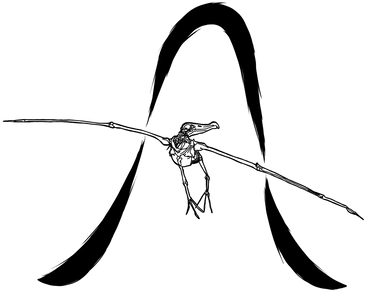
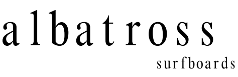

Surf
At the center of our surf shop is Albatross Surfboards, hand-shaped in Malibu Canyon by Jon Monroy. Around Jon’s boards, we bring together a constantly changing collection from independent shapers—some local, some from around the world, but all chosen for the quality of their craft and the way they surf. It’s less about carrying every board and more about finding the right ones: handmade, interesting and a little harder to find.
Coffee
Coffee is at the heart of it — a simple, well-made cup in a place you actually want to spend some time. We source quality coffee from roasters we believe in and keep the menu focused on the things we think matter: great beans, thoughtful preparation and consistency. Whether you’re grabbing one on the way out or settling into a chair for an hour, the goal is the same: really good coffee without making it complicated.
Opening
We're deep in the build-out now. Leave your email and you'll hear from us the week the doors open.
Know when we open
One email when we open, and the occasional note about a swell, a new shaper or a bag of something good. Nothing else, ever.
We'll never share your address with anyone.
From the people behind


Boards by albatross surfboards.